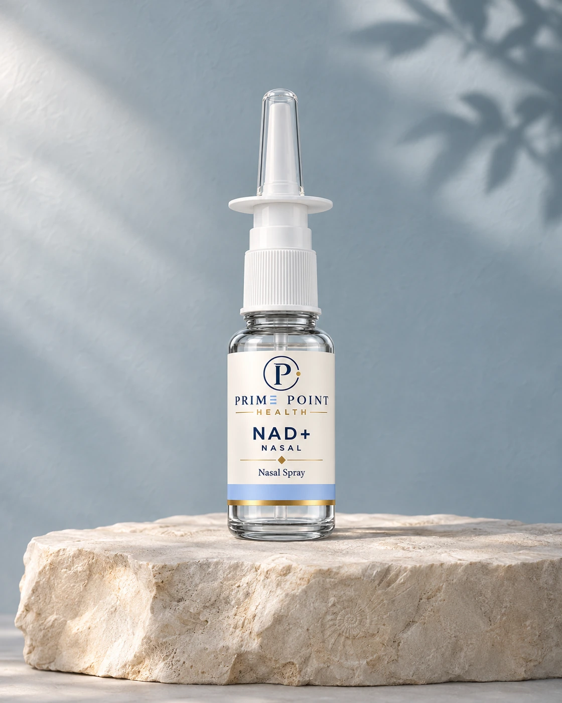

Cellular Energy
NAD+ helps turn nutrients into ATP, a primary source of energy your cells use to function.

How NAD+ Works
NAD+ carries electrons from nutrients, helping cells turn those nutrients into energy they can use.
NAD+ picks up electrons as cells break down nutrients.
As NADH, it transfers those electrons in the mitochondria.
This transfer helps produce ATP, which powers cellular activity.
Product illustration. Actual packaging may vary.
100 mg/mL · 30 mL
$199/ month
NAD+ Nasal delivers fast-acting support for focus, clarity, and cellular vitality - anytime, anywhere.
Prescription only when clinically appropriate. Eligibility and results vary.
NAD+ stands for nicotinamide adenine dinucleotide. It is a coenzyme found in cells that participates in energy metabolism and serves as a substrate for enzymes involved in cellular maintenance.
NAD+ nasal spray is a prescription wellness product that delivers nicotinamide adenine dinucleotide (NAD+)—a vital coenzyme found in all living cells—through tissue inside your nose, which contains a rich network of blood vessels. The medication absorbs quickly through this membrane directly into local tissues and the bloodstream.
Scientifically Proven to Help You Feel Younger, Sharper, and More Alive.
NAD+ helps turn nutrients into ATP, a primary source of energy your cells use to function.
It supports the normal function of your muscles, brain, and heart as part of cellular energy metabolism.
NAD+ Nasal absorbs directly into blood vessels and olfactory pathways.

NAD+ supports enzymes involved in DNA repair, one part of cellular maintenance.
It supports enzymes involved in how cells respond to stress.
A coenzyme found throughout the body, NAD+ participates in energy metabolism and cellular maintenance.
No insurance required
Prescription only when clinically appropriate. Eligibility and results vary.
Be wary of cheap research peptides, or medication with low to no absorption such as supplements. We only offer real high-potency doctor-prescribed NAD+ Nasal Spray you can trust.
| What to compare | Prime Point HealthNAD+ Nasal SprayClinician-guided care | Over the counterOral SupplementsFormulations vary by product |
|---|---|---|
| Legally prescribed for human use | Yes - Rx from licensed provider | Yes - Over the counter |
| Purity & transparency | Clinical-grade, US pharmacy sourced | Variable quality & under-dosed |
| Absorption rate | Bypasses the digestive tract for rapid absorption | Low - ~10–15% absorbed |
| Medical oversight | Includes consult & dosage guidance | None |
| Speed of Onset | Fast (Often 15 - 30 minutes) | Slow or negligible |
| Safety & compliance | HIPAA-compliant & pharmacy-verified | Often lacks 3rd-party testing |

Our U.S.-based 503A pharmacy partners compound active ingredients into medications for individual patients. These pharmacies are state-licensed and subject to FDA oversight.

We have personally vetted all pharmacy partners' compounding practices including how they test for potency, sterility, and endotoxins. We have thoughtfully chosen the highest quality pharmacies to provide medication to our patients.
When your clinician prescribes a compounded medication for you, our pharmacy partner prepares it to order in the formulation and strength specified on your prescription.
NAD+ is found in every cell of your body and plays an essential role in cellular energy production and maintenance. By cycling between NAD+ and NADH, it carries electrons that help cells turn nutrients into ATP, a primary source of cellular energy. NAD+ also supports enzymes involved in DNA repair and cellular stress responses.
Yes. Every Prime Point Health treatment plan is reviewed and guided by licensed, board-certified clinicians. You'll have access to expert care, ongoing monitoring, and the support you need to track your progress.
When prescribed as a subcutaneous injection, NAD+ is administered into the fatty tissue beneath the skin. It can also be administered via a prescribed nasal spray through the nasal lining. Follow the dose, route, and administration instructions provided by your licensed clinician and dispensing pharmacy.
Yes. All medications are sourced through FDA-registered, U.S.-based compounding pharmacies that follow applicable regulatory and safety requirements. FDA registration does not mean compounded medications are FDA-approved.
NAD (nicotinamide adenine dinucleotide) is a molecule found in every cell of your body. It helps turn food into energy and supports the normal function of your muscles, brain, and heart. NAD levels can decline with age, and healthy daily choices remain an important part of supporting cellular health.
No. Insurance is not required for NAD+. Prime Point Health accepts credit cards and offers pay-over-time plans for added flexibility.